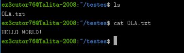
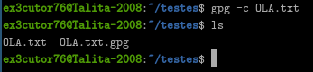
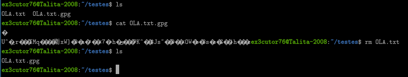
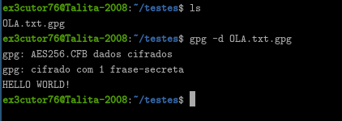

GnuPG/GPG:
O GNUPG ou também GPG é uma ferramenta que usa diferentes tipos de criptografia como RSA, ECC, AES e até usa
HASH, como SHA256 e até mesmo SHA512 para criptografar arquivos, a sigla GNUPG significa: GNU Privacy Guard
significando que ela serve especificamente para segurança de arquivos.
Como utilizar:
Aviso: Isso foi feito no Linux, infelizmente não tem como eu poder ensinar por Windows, mas irá ser deixado a
ferramenta de instalação tanto para windows quanto para Linux.

Aqui criei uma pasta para testes, para mostrar a vocês como funciona o uso básico pelo menos... Percebe-se que temos
o arquivo chamado de "OLA.txt" que dentro do arquivo txt está escrito "HELLO WORLD!", mas e agora? Como criptografamos?
Com o GPG?, bem abaixo está a resposta.

Como podem ver, usei o comando: gpg -c OLA.txt.
A flag "-c" significa algo como "crypted", assim criptografando o arquivo, que logo após você usar esse comando em qualquer
arquivo que você quiser criptografar, ele vai te pedir pra colocar uma senha e sim se caso a senha for fraca ele vai te avisar
e até aconselhando que a senha tenha pelo menos 8 caracteres... Só que não é obrigatório então relaxa.
Outra coisa que vocês podem perceber é que agora temos 2 arquivos, sendo um que está criptografado e o outro totalmente vulnerável,
o que está criptografa termina com .gpg, então já sabemos quem está criptografado e adivinha? Sim se você usar o comando "cat" no
arquivo gpg, ele irá mostrar códigos ilegíveis, até você descriptografar, quer fazer o teste? Venha comigo.

Percebe-se que após criptografar o arquivo ele mostrou o "HELLO WORLD!" de uma forma que não dá pra compreender? Pois é... Essa é a
criptografia do GPG, que inclusive é uma ferramenta antiga e explorada até hoje, mas agora... Vamos descriptografar e sim eu apaguei o
arquivo original que seria o "OLA.txt", afinal... Vamos ver a mensagem mesmo criptografado após a descriptografia.

Pois é, conseguimos descriptografar... E bem... Se você perceber foi bem simples... Só usamos o comando: gpg -d OLA.txt.gpg e pela lógica
que ainda é em inglês a flag "-d" seria algo como "decrypt" que seria descriptografar, bem simples né? E bem ele só mostra o que está escrito
mas não de fato entrega o arquivo inteiro, isso é até bom para quem quer enviar um arquivo confidencial para alguém.
Formas de instalação:
Aviso: Na parte de instalação no Linux só vai servir para distros de Debian ou Ubuntu ou baseadas, entretanto, podem tentar instalar normalmente no
seu sistema que pode funcionar com o mesmo nome sendo "gnupg".
Linux: sudo apt install gnupg
Termux: pkg install gnupg